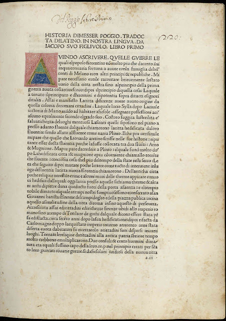
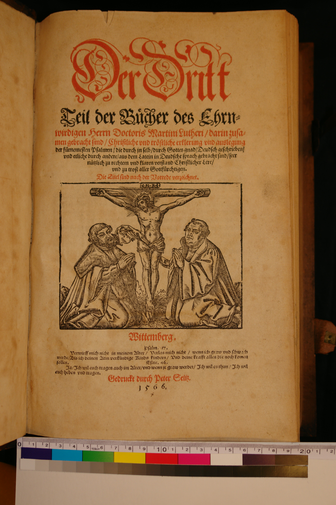
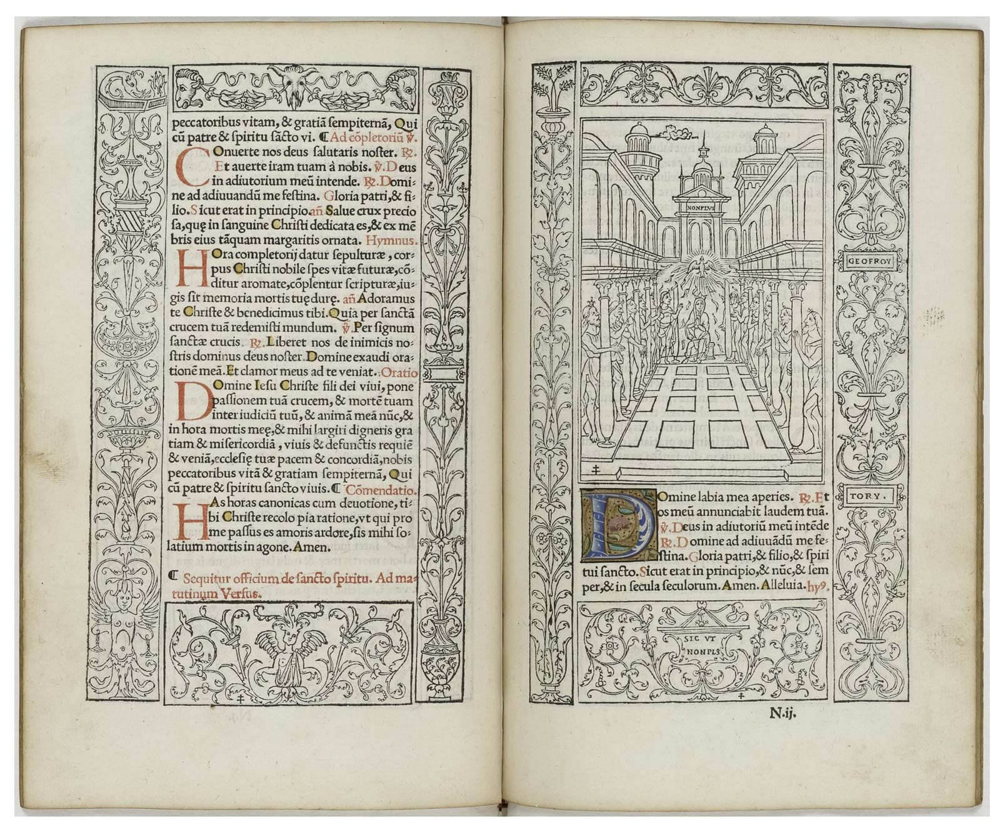
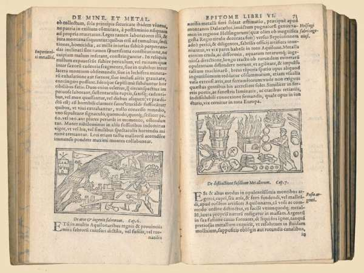
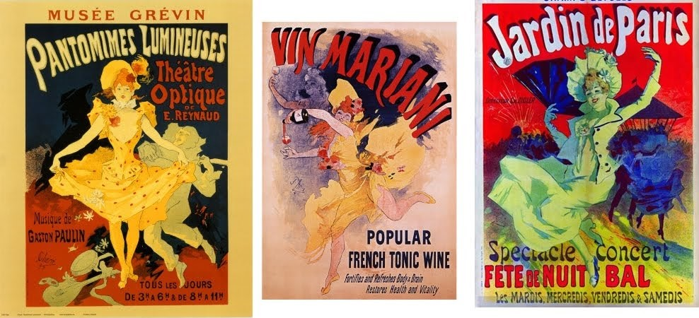
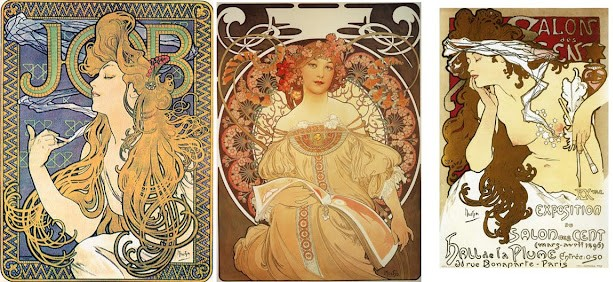

High on History
High on History is a MMMM (Mixing Maps, Magazines and Metadata) project developed to transform reading into a virtual time travelling experience across past and future typography trends. Nine articles related to the topic of the usage of drugs in warfare are displayed in three issues of the magazine. The articles are organised in issues according to the time period they relate to. The issues are "Antiquity", "The Two World Wars" and "Contemporaneity". Each article is geo-referenced and its metadata are accessible to the user.
How to Use it
Insert text
Layout and typographic styles
The themes were designed according to the organizational characteristics of a historical style in depending on the related time period, and maps are also converted to the graphical style of the chosen time span. Colour palettes were chosen on the basis of the images and the decorations population the webpage magazine. Overall, the whole website changes aspect in depending on the style the users chooses.
Early sixteenth century
For the general layout of the page, the inspiring document was "Chapter 24 - The Emergence of Modern Printing Technique" in Guity Novin's History of Graphic Design. Overall, the webpage aims to resemble the publication of Historia Florentina (1478) by Poggio Bracciolini. The choice of the two column layout comes instead from the publication of the Gutemberg Bible, printed in 1450s. The colours of the inital in this edition also inspired the highlighing of the metadata in the issues themselves. The main font is Garamond, that owes its name and style to the design of the typeface designer and punch-cutter Claude Garamond (ca. 1480–1561). However, other fonts have also been used, taking inspiration from publications such as "Der Dritt Teil de Brucher des Ehrn" by Martin Luther in 1566.Italics is used because it is an invention belonging to the European Reinassance, and the colour red is a feature that appears in the book "Qvesta opra da ogni parte e un libro doro" (1476) by Johannes Müller von Königsberg as well as in "Der Dritt Teil de Brucher des Ehrn" (1566) by Martin Luther previously mentioned. Borders and ornaments are also inspired by an edition of Aristotle (1495-98) by the prominent Venetian publisher and printer Aldus Manutius as well as by decorations created according to the style of Robert Granjon (1513–1590). An example of the use of borders in early press is visible in the "Book of Hours" published in 1525 by Colines and Tory.Images and photos are filtered in black and white because they aim to resemble the black and white drawings printed in the office of the typographer Christophe Plantin as this edition printed in 1572 shows. The font chosen for their label is also inspired by this edition.
Nineteenth century
The webpage aims to resemble a publication of the Nineteenth century, which is why the chosen font is Bodoni. Indeed, Bodoni owes its name and style to the Italian printer Giambattista Bodoni (1740-1813), who designed several modern typefaces between the end of the Eighteenth century and the beginning of the Nineteenth. However, the headlines of the text are displayed in the font "Trinigan", which aims to resemble the labels on the old cigar boxes and posters displayed in "Chapter 25 - Pioneers of the Art Nouveau, Chromolithography and the emergence of the modern poster and cigar box labels" in Guity Novin's History of Graphic Design. For the other fonts, the article on Art Nouveau Magazines on The Vienna Secession website was also an inspiration. The vivid colours of the page are also inspired by the posters of the late Nineteenth century, whereas the border of the page was chosen as a typical expression of Art Nouveau in publications at that time, as shown in "Chapter 64 - A History of Magazine Covers" in Guity Novin's History of Graphic Design. The women and flower-themed decorations are inspired by the designs of Alphonse Mucha (1860-1939) and other designers at the time.
First half of Twentieth Century
insert text
Second half of Twentieth Century
The "Second half of the XX Century" style was inspired by legendary American magazines such as Time and Life, who were the ground for the golden age of advertisement and photo journalism as described in Chapter 32 in Guity Novin's History of Graphic Design. Other sources of inspiration were the road-trip maps that were usually sold at gas station, popular throughout the whole century. Magazines during this period were filled with full-page images, alternating colors and black and white. It is indeed in this period that colors started being associated with different kinds of psychological engagement. The margins started being wider compared to the previous half of the century (about 6 em), presenting often no more than 3 columns per page, and often a large portion of the page was occupied by other images, being ads or descriptive photographies of the article. The fonts were mostly sans-serif for titles and sub titles, and mostly non homogenous throughout the same issue, as notable form this issue of Life Magazine from April 16th of 1971. The home page is of course inspired by the iconic Time Magazine cover, with the title style being inspired by Life magazine.
Late Twentieth Century
insert text
the Future: 2030
insert text